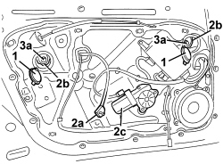
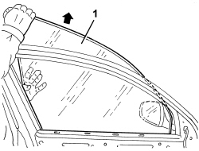

7005D15 FRONT SIDE DOOR DESCENDING WINDOW GLASS (ONE) LEFT OR RIGHT - R.R
- Path
- Procedures > 70 FITTINGS > 7005 PASSENGER COMPARTMENT FRONT SIDE DOORS > 7005D FRONT DOOR WINDOW GLASSES > 7005D15 FRONT SIDE DOOR DESCENDING WINDOW GLASS (ONE) LEFT OR RIGHT - R.R
- Kind
- repair procedure (removal / refitting; the operation number is the code)
- Applies to
- all engines; all production periods
- Interactive page
- https://sloeber94.github.io/elrnDB/#/939011128
Applies to: all engines; all production periods
 Removing
Removing
 Refitting
RefittingOp. 7005E12 CORNER COVER FOR ONE FRONT SIDE DOOR, LH OR RH - R.R.
Op. 7005E38 FRONT SIDE DOOR INTERIOR HANDLE- R.R.
Op. 7040E24 LOWER COURTESY LIGHT IN DOOR PANEL - R+R
Op. 7005E10 FRONT SIDE DOOR INTERIOR PANEL - R.R.
Op. 7005D30 FRONT SIDE DESCENDING WINDOW GLASS SCRAPER (INNER) (ONE), LEFT OR RIGHT - R.R.
1. Open the access covers to the window retaining terminals.
2. Provisionally connect the window switch unit to connection (2a), then move the window until the glass retaining terminals (2b) are in an accessible position (as in the figure).
If the window motor (2c) is faulty, remove and then move the window by inserting a tool in the groove left free by the motor.
3. Loosen bolts (3a) of terminals (2b).

Applies to: all engines; all production periods
1. Proceeding with car, lift the glass by hand (first raise from the rear) and remove from the outside of the door frame.

Applies to: all engines; all production periods
Refitting
Removing- Check the condition of the glass, retaining terminals and slide channels.
- Position the glass in its housing with care and lower until it is housed in the retaining terminals.
- Ensure the glass is correctly fitted in the terminals, then push home in the rear slide channel.
- Tighten the retaining terminal bolts.
Component | Fastening | dia | Value (daNm) | Validity |
|---|---|---|---|---|
FRONT DOOR WINDOW | Bolt | M6x16 | 0.7 ÷ 1.1 |
- If removed, fit the window motor.
- Close the access covers to the window retaining terminals.
Provisionally connect the window switch unit to the connection, then move the window to monitor its operation.
Op. 7005D30 FRONT SIDE DESCENDING WINDOW GLASS SCRAPER (INNER) (ONE), LEFT OR RIGHT - R.R.
Op. 7005E10 FRONT SIDE DOOR INTERIOR PANEL - R.R.
Op. 7040E24 LOWER COURTESY LIGHT IN DOOR PANEL - R+R
Op. 7005E38 FRONT SIDE DOOR INTERIOR HANDLE- R.R.
Op. 7005E12 CORNER COVER FOR ONE FRONT SIDE DOOR, LH OR RH - R.R.
- Check that the dismantled parts are working.
Topics linked from this page (5)
- 7005D30 FRONT SIDE DESCENDING WINDOW GLASS SCRAPER (INNER) (ONE), LEFT OR RIGHT - R.R.
- 7005E10 FRONT SIDE DOOR INTERIOR PANEL - R.R.
- 7005E12 CORNER COVER FOR ONE FRONT SIDE DOOR, LH OR RH - R.R.
- 7005E38 FRONT SIDE DOOR INTERIOR HANDLE- R.R.
- 7040E24 LOWER COURTESY LIGHT IN DOOR PANEL - R+R
Topics that link to this page (16)
- V005 FRONT DOOR WATER PENETRATION
- V006 REAR DOOR WATER PENETRATION
- 5505B11 FRONT DOOR WIRING (ONE) LEFT OR RIGHT - R.R
- 7005A08 INTERIOR SUPPORT FRAME FOR ONE SIDE DOOR - R.R. WITH DOOR PANEL REMOVED
- 7005A09 FRONT SIDE DOOR INTERIOR SUPPORT FRAME - R.R.
- 7005C10 FRONT DOOR EXTERIOR HANDLE - R.R WITH DOOR PANEL REMOVED
- 7005C11 FRONT SIDE DOOR EXTERIOR HANDLE - R.R
- 7005C41 FRONT SIDE DOOR EXTERIOR HANDLE LOCK CONNECTION LINK - R.R
- 7005D24 FRONT DOOR WINDOW REAR GUIDE - R R
- 7005D25 FRONT DOOR WINDOW REAR GUIDE - R R
- 7005D26 FRONT SIDE DESCENDING WINDOW GLASS SCRAPER (OUTER) (ONE), LEFT OR RIGHT- R.R
- 7005D33 CHANNEL FOR DOOR DESCENDING GLASS INNER GUIDE (ONE) LH OR RH ON FRONT SIDE DOOR - R.R.
- 7005E50 FRONT SIDE DOOR PILLAR TRIM (ONE) LH OR RH - R.R.
- 7005M26 ELECTRIC WINDOW MECHANISM FOR ONE FRONT DOOR LH OR RH - R.R
- 7005N21 FRONT SIDE DOOR LOCK MOTOR/LOCK ASSEMBLEY FOR ONE DOOR, LEFT OR RIGHT - R.R.
- 7205E36 STRIPPING FRONT SIDE DOOR